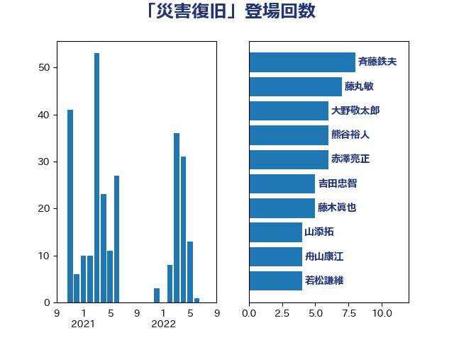

単語「災害復旧」

| 斉藤鉄夫 | 公明党 | 8 回 |
| 藤丸敏 | 自由民主党 | 7 回 |
| 大野敬太郎 | 自由民主党 | 6 回 |
| 熊谷裕人 | 立憲民主党 | 6 回 |
| 赤澤亮正 | 自由民主党 | 6 回 |
| 吉田忠智 | 立憲民主党 | 5 回 |
| 藤木眞也 | 自由民主党 | 5 回 |
| 山添拓 | 日本共産党 | 4 回 |
| 舟山康江 | 国民民主党 | 4 回 |
| 若松謙維 | 公明党 | 4 回 |
| 赤羽一嘉 | 公明党 | 4 回 |
| 進藤金日子 | 自由民主党 | 4 回 |
| 野上浩太郎 | 自由民主党 | 4 回 |
| 井林辰憲 | 自由民主党 | 3 回 |
| 伊波洋一 | 無所属 | 3 回 |
| 奥野総一郎 | 立憲民主党 | 3 回 |
| 岡本あき子 | 立憲民主党 | 3 回 |
| 平口洋 | 自由民主党 | 3 回 |
| 末松信介 | 自由民主党 | 3 回 |
| 森屋隆 | 立憲民主党 | 3 回 |
| 武田良太 | 自由民主党 | 3 回 |
| 葉梨康弘 | 自由民主党 | 3 回 |
| 鰐淵洋子 | 公明党 | 3 回 |
| 冨樫博之 | 自由民主党 | 2 回 |
| 小宮山泰子 | 立憲民主党 | 2 回 |
| 梶山弘志 | 自由民主党 | 2 回 |
| 横沢高徳 | 立憲民主党 | 2 回 |
| 田村貴昭 | 日本共産党 | 2 回 |
| 石井正弘 | 自由民主党 | 2 回 |
| 芳賀道也 | 国民民主党 | 2 回 |
| 足立敏之 | 自由民主党 | 2 回 |
| 輿水恵一 | 公明党 | 2 回 |
| 鈴木俊一 | 自由民主党 | 2 回 |
| 馬場成志 | 自由民主党 | 2 回 |
| おおつき紅葉 | 立憲民主党 | 1 回 |
| 中村裕之 | 自由民主党 | 1 回 |
| 中根一幸 | 自由民主党 | 1 回 |
| 中西祐介 | 自由民主党 | 1 回 |
| 伊藤渉 | 公明党 | 1 回 |
| 原口一博 | 立憲民主党 | 1 回 |
| 坂本哲志 | 自由民主党 | 1 回 |
| 城井崇 | 立憲民主党 | 1 回 |
| 安江伸夫 | 公明党 | 1 回 |
| 宮崎政久 | 自由民主党 | 1 回 |
| 岸田文雄 | 自由民主党 | 1 回 |
| 岸真紀子 | 立憲民主党 | 1 回 |
| 平沢勝栄 | 自由民主党 | 1 回 |
| 庄子賢一 | 公明党 | 1 回 |
| 斎藤洋明 | 自由民主党 | 1 回 |
| 新妻秀規 | 公明党 | 1 回 |
| 日下正喜 | 公明党 | 1 回 |
| 早坂敦 | 日本維新の会 | 1 回 |
| 横山信一 | 公明党 | 1 回 |
| 武部新 | 自由民主党 | 1 回 |
| 清水真人 | 自由民主党 | 1 回 |
| 田村智子 | 日本共産党 | 1 回 |
| 石原正敬 | 自由民主党 | 1 回 |
| 簗和生 | 自由民主党 | 1 回 |
| 菅家一郎 | 自由民主党 | 1 回 |
| 菅義偉 | 自由民主党 | 1 回 |
| 萩生田光一 | 自由民主党 | 1 回 |
| 西銘恒三郎 | 自由民主党 | 1 回 |
| 道下大樹 | 立憲民主党 | 1 回 |
| 野間健 | 立憲民主党 | 1 回 |
| 青木愛 | 立憲民主党 | 1 回 |
| 高橋千鶴子 | 日本共産党 | 1 回 |